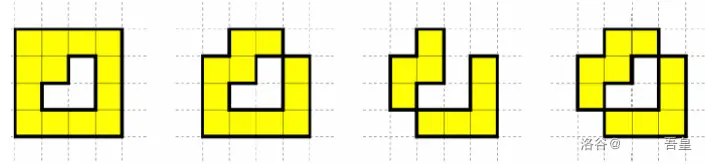
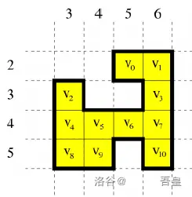

题目描述
像许多同龄的科学家和艺术家一样，小 L 对城市规划和城区设计很感兴趣.他致力于构建一个理想城。理想城由 N 个区块组成，而这些区块放在一个无限大的正方形网格上。第 x 行第 y 列的单元格由有序数对 (x,y)来标识。单元格 (0,0) 位于网格的左上角。给定一个单元格 (x,y)，与之相邻的单元格（如果存在的话）分别为：(x−1,y)，(x+1,y)，(x,y−1)，(x,y+1)。每个区块在网格上恰好覆盖一个单元格。一个区块能够被放置在单元格 (x,y) 上，当且仅当 1≤x,y≤231−2 。我们将使用单元格的坐标同时来代表单元格上面的区块。若两个区块被放在相邻的单元格中，则视它们为相邻区块.理想城所有的区块连在一起，里面没有“洞”存在.换言之，所有单元格必须满足下述两个条件：
- 对于任意两个空白的单元格，至少存在一连串相邻的空白单元格连接它们。
- 对于任意两个非空的单元格，至少存在一连串相邻的非空单元格连接它们。
以下 4 个图中的区块放置均不满足理想城的条件。前两个图不满足第一个条件。第 3 个图不满足第二个条件，第 4 个图两个条件均不满足。

当遍历理想城时，一个跳步代表从一个区块走到一个相邻的区块。跳步时不能移进空白单元格。假设 v0,v1,⋯,vN−1 是 N 个区块的坐标。对于任意两个不同的区块 vi 和 vj，它们的距离 d(vi,vj) 是从 vi 移动到 vj 所需的最小跳步数目。
下图是一个由 11 个区块组成的理想城。区块坐标分别为

v0=(2,5)v1=(2,6)v2=(3,3)
v3=(3,6)v4=(4,3)v5=(4,4)
v6=(4,5)v7=(4,6)v8=(5,3)
v9=(5,4)v10=(5,6)
其中，d(v1,v3)=1，d(v1,v8)=6，d(v6,v10)=2，d(v9,v10)=4。
给定一个理想域，试求
S=i=0∑N−2j=i+1∑N−1d(vi,vj)
输入格式
第 1 行为一个正整数 N，为理想城区块的数目。
第 2 行到第 N+1 行，每行有两个非负整数。第 i+2 行为第 i 个区块的坐标 v_i = (x_i， y_i)。
输出格式
输出仅一行一个正整数，为 S 的值。由于 S 的值可能较大，你只需输出 S 对 109 取模的值。
输入输出样例
11
2 5
2 6
3 3
3 6
4 3
4 4
4 5
4 6
5 3
5 4
5 6
174
提示
对于 100% 的数据，1≤N≤105，1≤xi,yi≤231−2 。